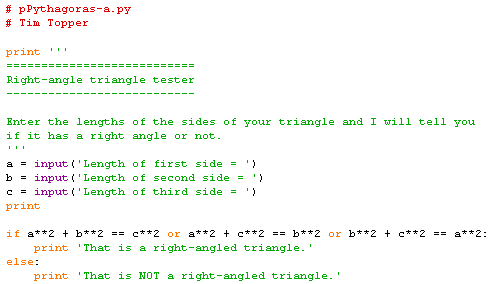
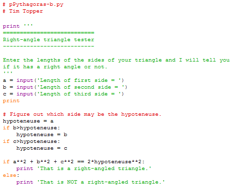

Write a program that accepts three integer values, and outputs a message stating whether they could be the sides of a right-angled triangle or not.
(The relevant math is Pythagoras' theorem, and since it has come up: you cannot specify the order in which the values are to be entered).
Sample runs:
Enter the lengths of the sides of your triangle and I will tell you
if it has a right angle or not.
Length of first side = 3
Length of second side = 4
Length of third side = 5
That is a right-angled triangle.
Enter the lengths of the sides of your triangle and I will tell you
if it has a right angle or not.
Length of first side = 3
Length of second side = 5
Length of third side = 4
That is a right-angled triangle.Enter the lengths of the sides of your triangle and I will tell you
if it has a right angle or not.
Length of first side = 3
Length of second side = 4
Length of third side = 6
That is NOT a right-angled triangle.Enter the lengths of the sides of your triangle and I will tell you
if it has a right angle or not.
Length of first side = 4
Length of second side = 4
Length of third side = 4
That is NOT a right-angled triangle.
